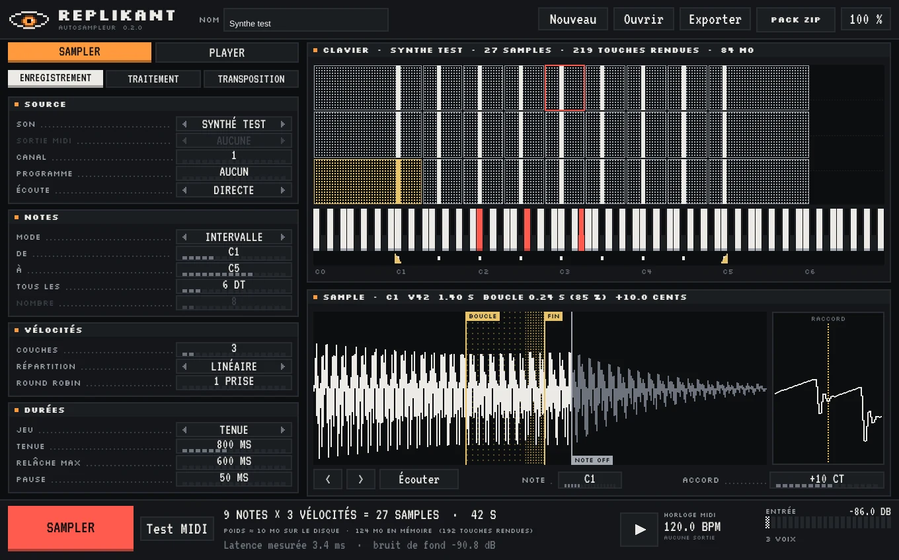
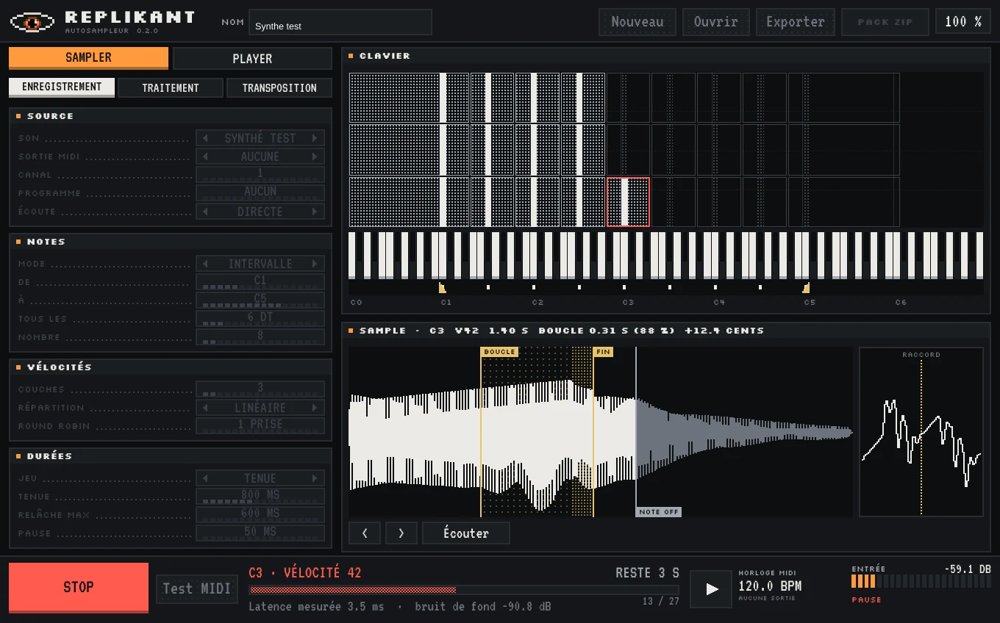
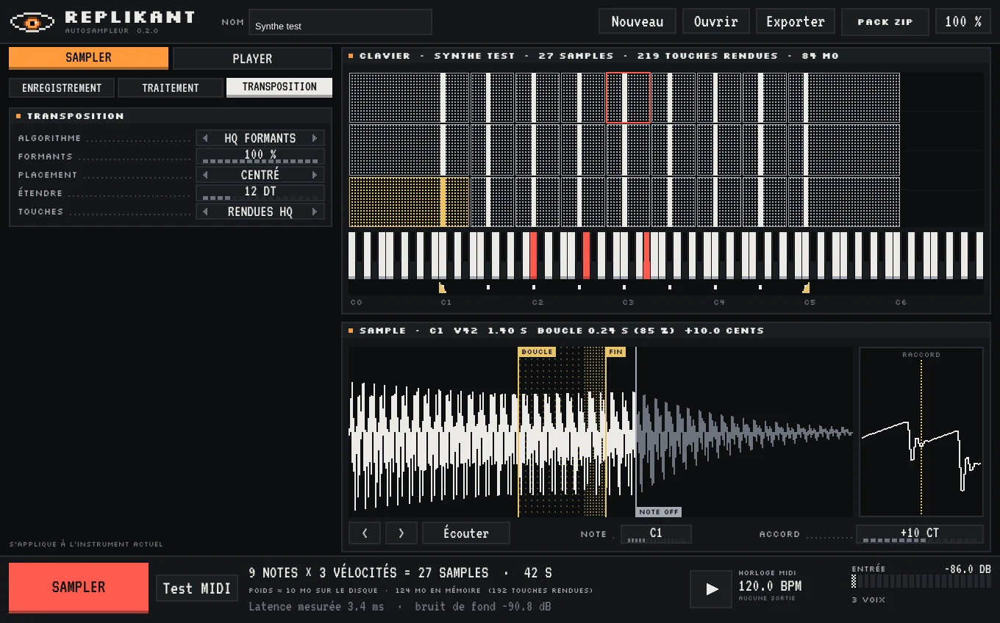

REPLIKANT.
L'autosampleur de tes synthés.
Il joue chaque note, l'enregistre, trouve la boucle, corrige la justesse,
et calcule les touches qui manquent sans que le timbre bouge.
- v@VERSION@
- macOS 11+
- Apple Silicon & Intel
- AU · VST3 · appli
- gratuit

00 · Ce qu'il fait
Enregistre
Les notes que tu veux (tous les N demi-tons, N notes réparties, ou à la main), jusqu'à 16 vélocités et 8 prises (round robin), le MIDI envoyé tout seul au synthé.
Découpe
Bruit de fond mesuré d'abord, attaque détectée (ou une latence fixe pour tous), la queue gardée jusqu'à ce qu'elle retombe dans le bruit.
Boucle
Des boucles longues qui suivent les modulations lentes (LFO, PWM), avec un fondu qui garde la puissance : ni creux, ni bosse.
Accorde
La justesse de chaque note est mesurée (même avec un sub ou des oscillateurs désaccordés) et corrigée en jouant.
Transpose
Les touches entre deux notes enregistrées : varispeed sans repliement, puis l'enveloppe spectrale remise en place.
Exporte
Dossier de WAV qui portent leur note, leur boucle et leur zone (Logic, Ableton, Kontakt…), ou .multisample Bitwig.
01 · Installer
- 1Ouvre le DMG. Quitte ton DAW.
- 2Double-clic sur Installer REPLIKANT. « Personnaliser » = juste l'AU, le VST3 ou l'appli.
- 3macOS refuse ? (Il n'aime pas ce qui n'est pas signé chez Apple.) Ouvre le Terminal : ⌘+Espace, tape Terminal, ⏎. Colle :
Puis ton mot de passe : rien ne s'affiche quand tu le tapes, c'est normal.
@INSTALLER_CMD@
- 1Ouvre le DMG. Quitte ton DAW.
- 2Glisse chaque élément sur son dossier : .component → Components, .vst3 → VST3, .app → Applications.
- 3Ouvre le Terminal : ⌘+Espace, tape Terminal, ⏎. Colle :
Mot de passe (invisible, c'est normal). Elle débloque l'AU et le VST3, puis fait valider l'AU.
@TERMINAL_CMD@
Quand le Terminal dit REPLIKANT est prêt., rouvre ton DAW. Live ne le voit pas ? Réglages › Plug-ins › Réanalyser.
Ensuite, les mises à jour se font depuis le plug-in : bouton Mise à jour en haut quand une version sort.
02 · Brancher
Deux câbles : le MIDI de l'ordinateur vers le synthé, et la sortie audio du synthé dans ta carte son. REPLIKANT envoie les notes directement au port MIDI choisi, quel que soit le DAW.
L'appli (le plus simple)
- Carte son (en haut) : ta carte, et les entrées où arrive le synthé.
- Page Enregistrement › Source : Son = Entrée, Sortie MIDI = le port du synthé, son canal.
- Test MIDI : tu dois entendre un C3 et voir le niveau d'entrée bouger.
Logic
- Une piste audio qui reçoit le synthé (monitoring d'entrée allumé), REPLIKANT en effet audio (Audio Units › distortedimages).
- Sortie MIDI = le port du synthé, puis Sampler.
- Pour jouer l'instrument : piste d'instrument, slot d'instrument › Effets contrôlés par MIDI › REPLIKANT, bouton Ouvrir.
Bitwig, Reaper, Cubase
- REPLIKANT sur une piste qui reçoit l'audio du synthé : il enregistre son entrée et joue l'instrument avec les notes de la piste.
- Sortie MIDI = le port du synthé (ou Hôte si tu routes la sortie MIDI du plug-in vers le synthé).
Ableton Live
- REPLIKANT sur une piste audio (entrée = le synthé, Monitor In) : il enregistre très bien.
- Live n'envoie pas de notes aux effets audio : pour jouer, Exporter en dossier de WAV et glisse-le dans Sampler (ou joue-le dans l'appli).
Pas de synthé sous la main ? Source › Synthé test : un petit analogique intégré, pour tout essayer.
03 · Sampler
- 1Notes : tire les deux poignées jaunes sous le clavier (ou De / À), puis Tous les N demi-tons. 3 demi-tons, c'est le bon compromis : la transposition HQ s'occupe du reste. Mode Perso : Alt-clic sur les touches.
- 2Vélocités : le nombre de couches, et où les mettre (réparties, plus dans le doux, plus dans le fort). Round robin : plusieurs prises de chaque note, jouées à tour de rôle.
- 3Durées : Tenue = la note tenue (la boucle est cherchée dedans), Relâche max = la queue la plus longue. One-shot pour les percussions.
- 4Donne un nom en haut, puis Sampler. Laisse le synthé silencieux au début : REPLIKANT mesure le bruit de fond, puis joue les notes une à une. La carte se remplit, la note en cours clignote en rouge.
- 5À la fin, l'instrument est enregistré dans Musique › REPLIKANT et ses touches sont rendues en HQ. Clique une zone de la carte pour voir son sample, sa boucle et son raccord ; joue sur le clavier (plus haut sur la touche = plus doux).

04 · Transposer
Entre deux notes enregistrées, les touches sont calculées. Trois algorithmes, page Transposition :
- HQHQ formants (par défaut) : varispeed avec un sinc de 128 points (pas de repliement, aigus intacts), puis l'enveloppe spectrale de chaque instant remise où elle était. Le filtre du synthé ne monte plus avec la note : c'est ce que fait le synthé lui-même. Formants à moins de 100 % = le timbre suit un peu le clavier.
- HDClassique HD : le varispeed seul, le son des samplers d'origine en propre.
- TDurée fixe : les attaques et les decays gardent leur durée (pitch-shift spectral), avec la même correction de formants. Pour les sons qui évoluent lentement.
Mesuré sur une dent de scie passée dans un filtre résonant fixe : l'écart moyen des harmoniques avec le vrai synthé jouant la note.
| Transposition | Varispeed | HQ formants |
|---|---|---|
| −12 demi-tons | 12,8 dB | 0,8 dB |
| −7 demi-tons | 7,7 dB | 0,5 dB |
| −3 demi-tons | 3,4 dB | 0,2 dB |
| +3 demi-tons | 3,5 dB | 0,4 dB |
| +5 demi-tons | 5,8 dB | 0,6 dB |
| +12 demi-tons | 13,9 dB | 0,2 dB |
Les boucles suivent : leur longueur reste un nombre entier d'échantillons (la vitesse est ajustée de moins d'un dixième de cent) et la zone bouclée est calculée comme une boucle sans fin, donc sans raccord audible. Touches : rendues HQ (calculées à l'avance, le meilleur son) ou en direct (varispeed à la volée, moins de mémoire). Placement : la note enregistrée au centre de sa zone, en bas ou en haut. Accordage : chaque note est jouée juste, d'après sa mesure.

05 · Exporter
- WAVDossier de WAV : chaque fichier porte sa note, sa justesse, sa boucle (chunk smpl) et sa zone (chunk inst). Glisse le dossier dans le Sampler de Logic, Sampler/Simpler d'Ableton, Kontakt, un Elektron, une MPC…
- BWBitwig .multisample : l'instrument complet (zones, vélocités, round robin, boucles), à glisser dans Bitwig.
- ★Chacun en deux versions : les samples enregistrés (le sampler cible transpose), ou toutes les touches rendues par REPLIKANT (chaque touche a son propre fichier : la qualité HQ partout).
L'instrument lui-même est un dossier dans Musique › REPLIKANT : un fichier .replikant et ses WAV. Ouvrir le recharge ; le projet de ton DAW s'en souvient.